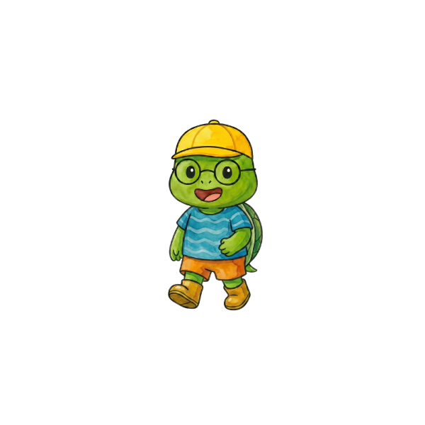

เรื่องราวใหม่เร็วๆ นี้
พื้นที่สำหรับเพิ่มภารกิจและแผนที่ชุดถัดไป
แต่ละภารกิจมี 10 แผนที่ย่อย ให้เด็กๆ ฝึกคิด วางแผน และเรียนรู้ทีละขั้น

🍃 🍂กดเลือกภารกิจ แล้วเข้าไปพิชิตแผนที่ย่อยทั้ง 10 แผนที่
พื้นที่สำหรับเพิ่มภารกิจและแผนที่ชุดถัดไป
เริ่มจากเดินตรง 3 ช่อง แล้วค่อยเรียนรู้เส้นทางที่ท้าทายขึ้น